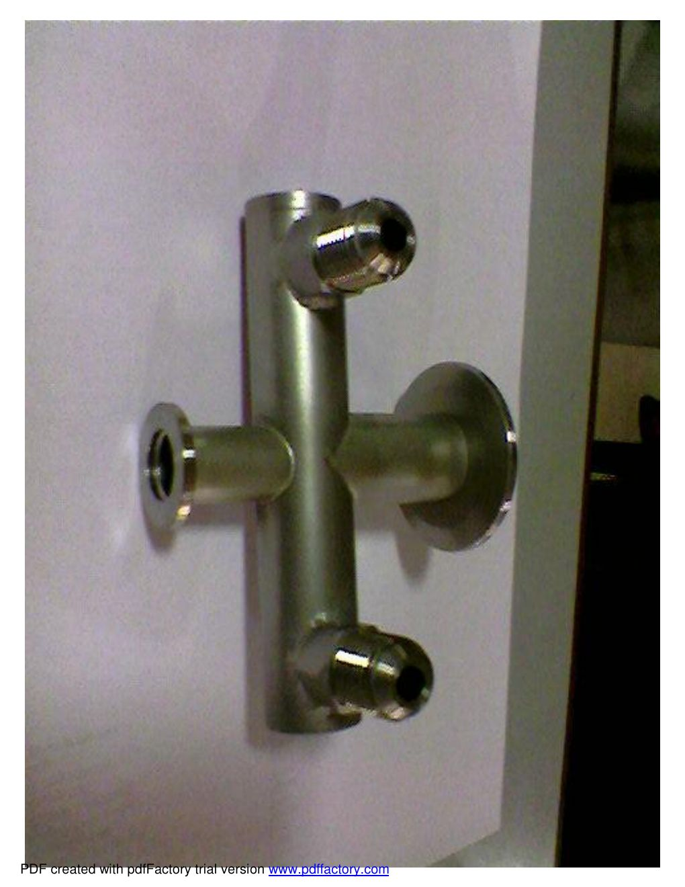
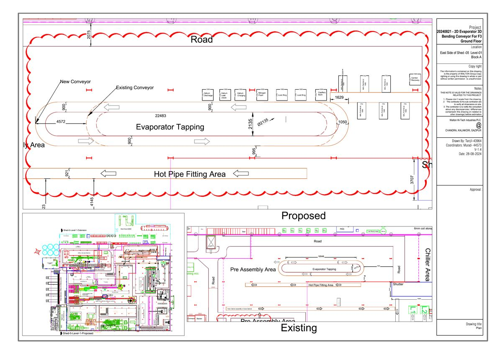
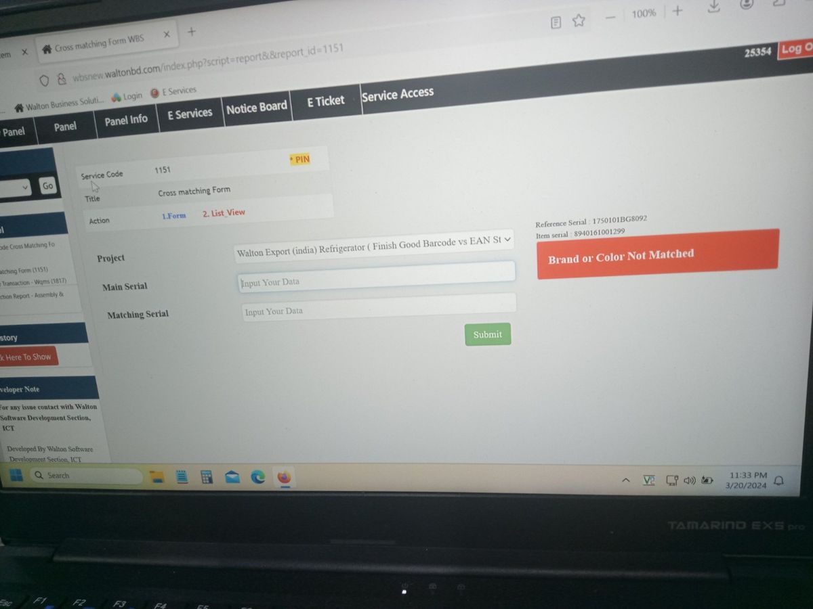
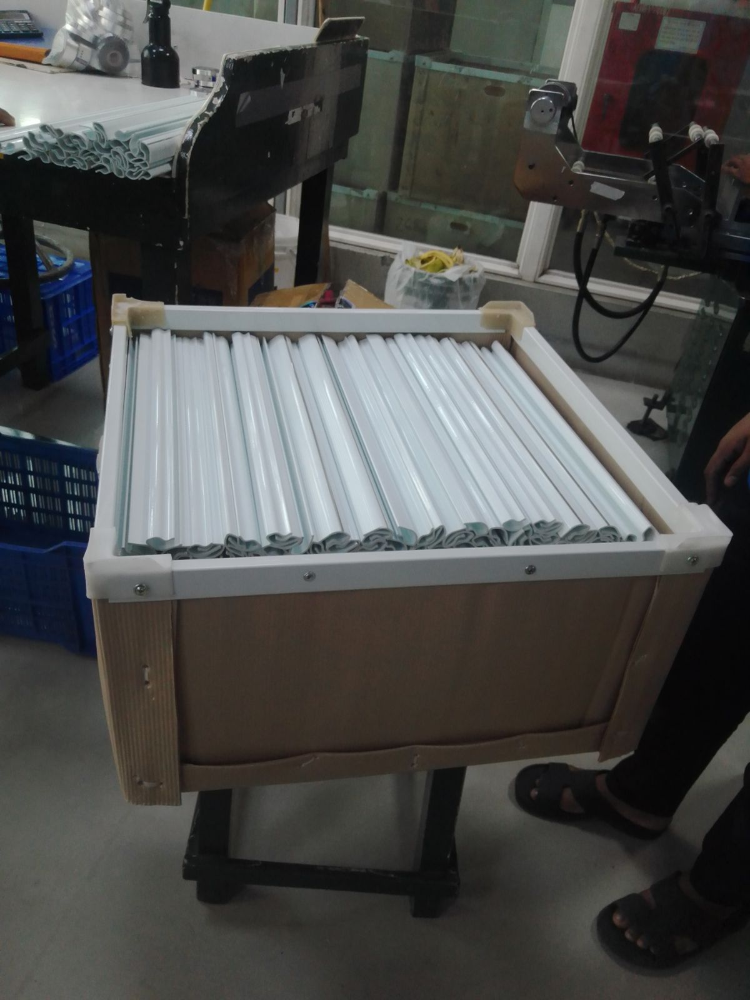
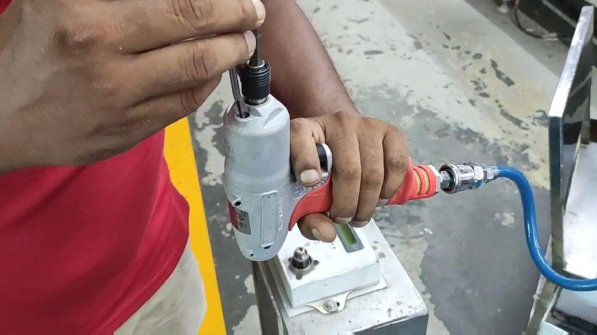
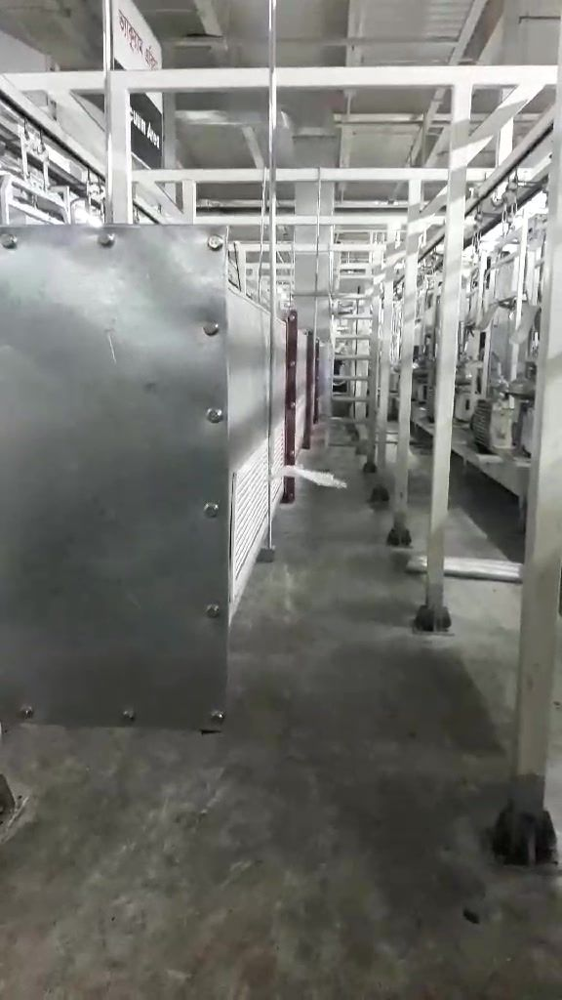

Vacuum System Improvement
Pirani-gauge/CAN-BUS vacuum monitoring, pump and manifold upgrades, flushing logic and duct-line modification for stable evacuation.
Reduced choking complaints from 0.13% (2021) to 0.02% (2025).
MECHANICAL ENGINEERING · PROCESS DEVELOPMENT
Mechanical Engineer with 6+ years of experience in process development, refrigerator manufacturing, industrial automation, vacuum technology and continuous improvement.
Senior Assistant Director — Process Development
Walton Hi-Tech Industries PLC
hossainmurad.me@gmail.comABOUT / RESEARCH PROFILE
I work at the intersection of manufacturing process development, refrigeration systems, thermal measurement, vacuum technology, traceability and automation. My goal is to translate factory problems into measurable engineering improvements and research questions.
For graduate study, I am particularly interested in energy-efficient thermal systems, intelligent manufacturing, IoT-based monitoring, industrial data analytics, design optimization and sustainable manufacturing.
RESEARCH INTERESTS
SELECTED ENGINEERING PROJECTS

Pirani-gauge/CAN-BUS vacuum monitoring, pump and manifold upgrades, flushing logic and duct-line modification for stable evacuation.

Data-driven aging/CPT improvement using delta-T logic, controlled temperature ranges and alternative decision methods.

Layout planning and conveyor development to integrate additional process steps while improving material flow and operator access.

Barcode, model, color and component cross-matching for export/OEM refrigerator models.

Dedicated trolleys, boxes and storage systems for plastic, profile and injection parts.

Evaluation and implementation of a new tightening tool to improve operator ergonomics and process capability.

Process-flow and line-development work for new models, voltage conversions, gas-amount changes and repair-model production.

Cooling duct-line modification between vacuum-pump stations to improve heat management around the process equipment.
PUBLICATIONS & RESEARCH
International Conference on Mechanical, Industrial and Materials Engineering, 2026
Topology-optimized Zamak 3 refrigerator hinge bracket with 45.7% mass reduction while maintaining structural adequacy.
ICAMBE 2025
IoT-based automated irrigation concept to optimize water use and improve agricultural productivity.
4th National Research Project Contest, 2025
Study of waste-generation growth, GHG implications and low-carbon management pathways.
IAAS Asia Pacific Scientific Event, 2025
Climate-smart agriculture strategies for adaptation, mitigation and farm resilience.
RUET Thesis, 2019
CFD-oriented study of dimpled NACA BE50 configurations to examine aerodynamic performance.
COMPLETE ENGINEERING PORTFOLIO
My complete portfolio is organized by working field and individual projects, supported by SOPs, line photos, traceability records, time studies, layouts and trial evidence.
Refrigerator Cooling Circuit Vacuum System — Monitoring, Upgradation & Troubleshooting
Refrigerator Cooling Performance Measurement System — Upgradation, Monitoring & Troubleshooting
Refrigerator CPT Box — Monitoring, Improvement & Troubleshooting
Production Image Tracking & Finished-Product Record Management System
Compressor & Refrigerator Barcode Traceability Cross-Check
Refrigeration Tube Brazing, Welding Quality & Operator Traceability System
Assembly Line Conveyor System — Modification, Optimization & Troubleshooting
New Conveyor & Production Line Development / Process Integration
Assembly-Line SOP, Q-Alert, CTP, OKP & Process Checklist Development
Assembly-Line Material Storage & Handling System Development
SAM Time Study, Cycle-Time Measurement & New-Model Capacity Analysis
Assembly-Line Balancing, Manpower Optimization & Productivity Improvement
Export Model, OEM & Critical-Component Traceability System Development
Production Gauge, Jig, Fixture & Support Tool Development
Cutting Die Development for PP Sheet, EPDM, EVA, XPE & UXPE Foam
Refrigerator Assembly Process Layout, Workflow & Production-System Development
Operator Training & Skill Development for Critical Refrigerator Assembly Processes
New Equipment & Process Technology Implementation
New Model, Model Conversion & Repair Line Development
AWARDS & CREDENTIALS
Best Employee of the Quarter — Walton Hi-Tech Industries PLC (2025)
Best Trainer Award — Walton Hi-Tech Industries PLC (2022)
Six Sigma Yellow Belt
SOLIDWORKS Design Associate (CSWA)
SOLIDWORKS Sustainability Associate
GRADUATE STUDY / RESEARCH COLLABORATION
If my background aligns with your laboratory or research group, I would be glad to discuss potential Master's research opportunities.